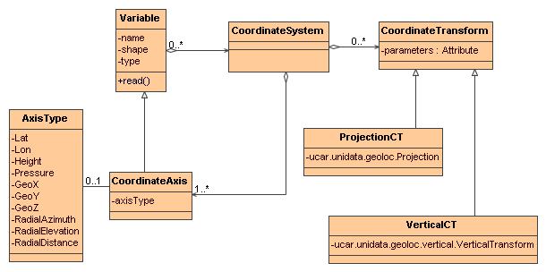

The ucar.nc2.dataset package and related packages are an extension to the NetCDF API which recognize standard attributes, provides support for general and georeferencing coordinate systems, provide support for the NetCDF Markup Language (NcML), and provides remote access to OpenDAP, ADDE and THREDDS datasets. NetcdfDataset.openFile is the recommended way to open any dataset as a NetcdfFile.
The preferred way to open a NetcdfFile is through the NetcdfDataset.openFile factory method:
String filename = "http://motherlode.ucar.edu:8080/thredds/dodsC/model/NCEP/GFS/CONUS_80km/GFS_CONUS_80km_20061019_0000.grib1"; NetcdfFile ncfile = null;
try {
ncfile = NetcdfDataset.openFile(filename, null);
process( ncfile);
} catch (IOException ioe) {
log("trying to open " + filename, ioe); } finally { if (null != ncfile) try { ncfile.close(); } catch (IOException ioe) { log("trying to close " + filename, ioe); } }
NetcdfDataset.openFile does the follwing:
When you want the Netcdf-Java library to deal with missing values and scale/offset unpacking, and to identify Coordinate Systems, you should use the NetcdfDataset.openDataset factory call, for example:
String filename = "http://motherlode.ucar.edu:8080/thredds/dodsC/model/NCEP/GFS/CONUS_80km/GFS_CONUS_80km_20061019_0000.grib1"; NetcdfDataset ncd = null;
try {
ncd = NetcdfDataset.openDataset(filename);
process( ncd);
} catch (IOException ioe) {
log("trying to open " + filename, ioe); } finally { if (null != ncd) try { ncd.close(); } catch (IOException ioe) { log("trying to close " + filename, ioe); } }
NetcdfDataset.openDataset does the follwing:
When you open a NetcdfDataset in enhanced mode (the default), any Variables that have the attributes scale_factor and/or add_offset are considered to be packed data Variables, whose data should be converted with the formula:
unpacked_data_value = packed_data_value * scale_factor + add_offset
usually the packed data type is byte or short, and the unpacked type is float or double, so the data type of the packed data Variable is promoted to float or double.
Missing data is indicated by the valid_min, valid_max, valid_range, missing_value or _FillValue attributes. When a Variable has any of these attributes, the VariableDS.hasMissing() method returns true. You can test for missing values with the VariableDS.isMissing( value) method.
To open a NetcdfDataset in enhanced mode, toggle the enhance button  on the ToolsUI Viewer tab to ON.
on the ToolsUI Viewer tab to ON.
NetcdfDataset will try to identify the Coordinate Systems in the dataset by calling a CoordSystemBuilder class that knows how to interpret the Conventions for that dataset. The information is placed in Coordinate objects that follow this abstract model (see the javadoc for the specifics):
:
To write your Coordinate System Builder, see here. Currently we have CoordSysBuilders for the following Conventions:
When an IOSP reads in a non-netCDF file, it should choose a Convention to use to encode the Coordinate Systems.
You can use ToolsUI CoordSys Tab to view the Coordinate Systems that have been constructued. This consists of 3 tables that show the data variables, the coordinate systems, and the coordinate axes.